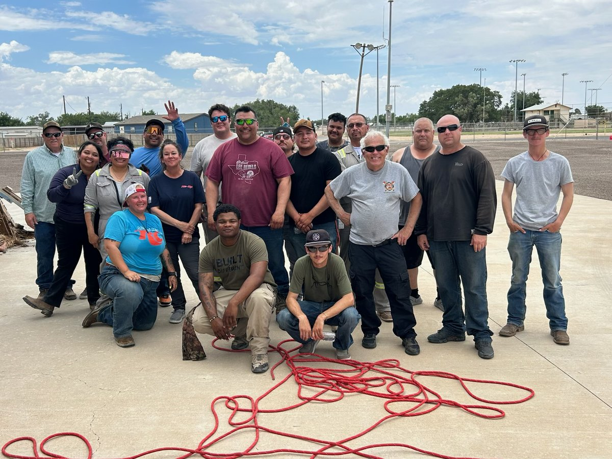
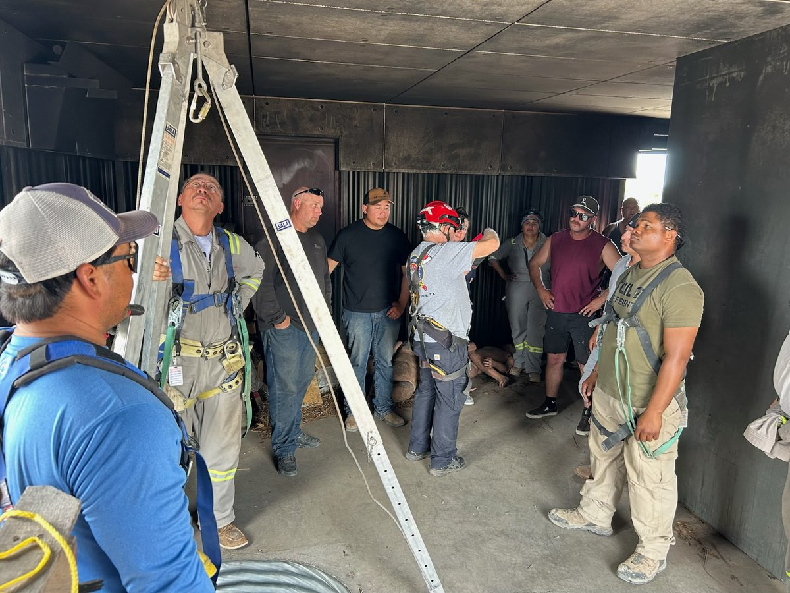
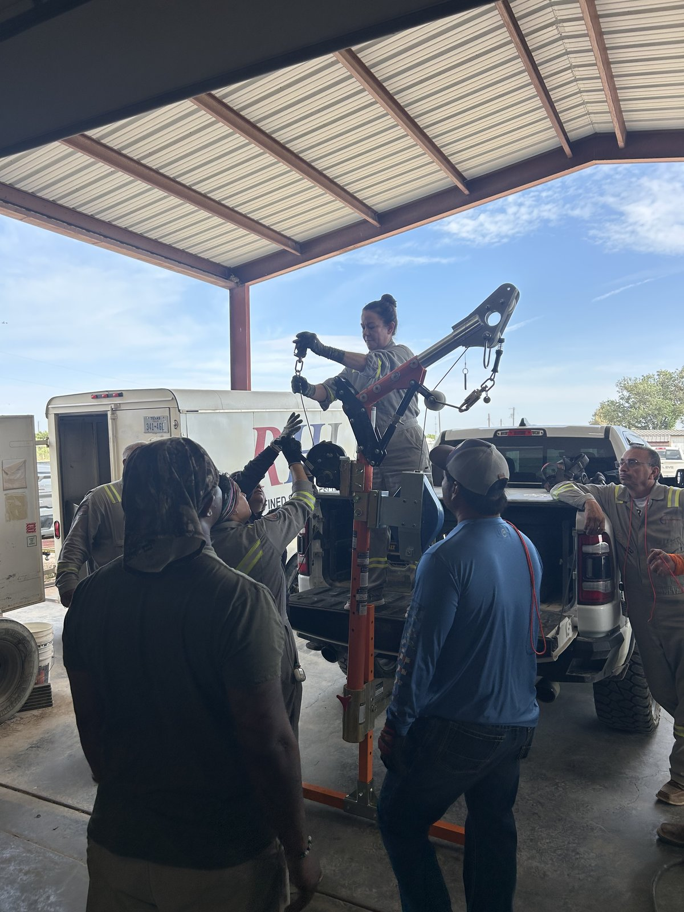

Canon Safety
Owl Leader Hub — 12-Week Program
Owl Leader Hub — 12-Week Program



We show up for each other. We do the right thing when it's hard. We own what's ours. We speak up when something's wrong. We leave every location safer than we found it. That's not a policy — that's who we are.
What is an Owl?
Owls are selected for one 12-week rotation to lead the morning safety meeting each week. One Owl owns one full week — the topic, the setup, the delivery, and the follow-through.
Each week follows a theme (leadership) paired with a PSMS topic (technical safety). The content is grounded in what actually happened in the field the prior day. Real situations, real crews, real stakes.
5:30 AM · ~10 minutes · Opening → PSMS Topic → Safety Moments & Lessons Learned → Recognition → Leadership Thought
Quick Access
From the Field
Real situations from your crew, recent days. Use these in your meeting — they're already yours.
12-Week Curriculum — PSMS Topics
Breakroom — Recognition & Incidents
Previous day's recognition and flags from Breakroom — updated nightly to keep the conversation fresh and relevant.
OWL Meeting Log
Today's Meeting Runsheet
Anytime something stands out — good or bad — submit it. Takes about 2 minutes. Goes directly to Mike.
Opens your Mail app with this review pre-filled. Hit Send.